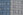
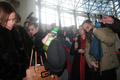

2007.02.13., kedd
tomcat
blog
droidzóna
levrov
Igen! Ezt is megértük. Valaki belelõttem belelõtt a Teve utcai rendõrpalotába. A köztársaság e üvegbe és acélba álmodott oszlopába, melynek egyébként én adtam a rendõrpalota nevet, s mely elõtt oly sokat sétálgattam én is Kalasnyikovval. Érdekes, majdnem pont onnan lõttek most is, ahol én mászkáltam. Fontos embereink természetesen siettek bejelenteni, hogy ez természetesen "a rendõrség elleni verbális támadások" folyománya, értsd, ahol csúnyát mondanak a rendõr bácsikra, ott rövidesen törvényszerûen gépkarabéllyal is osztani kezdik a székházukat, mint az történik Los Angelestõl Vlagyivosztokig minden faluban. Jönnek persze a terrorszakértõk, megmondják a frankót, hogy ez lesz még durvább is, naná, hogy lesz, még szerencse, hogy két embert elõállítottak, különben még gyanúsított sem lenne. Közben volt egy cuki bombariadó-sorozat is tegnap, a KFKI-tól a Jobbik irodájáig mindenki be lett fenyítve, bár bomba nem volt. (Még. De ezzel nem foglalkozik a terrorszakértõ, csak én mondom.)
Reggel Mortimer utolsó tárgyalásán hallottam, mi történt. A tárgyalás maga szóra sem érdemes, ítélethirdetés lett volna, de Mortimerre rájött a cifrafosás, és szalmonella gyanújával otthon maradt. Tárgyalás elnapolva, viszlát két hét múlva, február 27-én, kedden, 9 órakor, a Fõvárosi Bíróságon. (Ha valakit érdekel, ugyebár.) Az újságírók szétszéledtek, ki a Parlamentbe, ahol Szili Katalin valami románokat fogadott, ki a szerkesztõségbe, ki a kocsmába. Én pedig a Teve utcához. Kaptok azért képeket a tárgyalásról is, ne potyára csináljam már õket. A metrón majdnem állva aludtam, ugyanis az éjjel erre nem volt alkalmam, de bizisten tényleg nem én lõttem bele a rendõrségbe.
Tárgyalóterem. Vádlott sehol, várunk, várakozunk, unatkozunk. Odakint a Patai család táncikál, és azt üvöltözik, "cigányok vagyunk, cigányok vagyunk". Õk is unatkoznak.
Unalmunkban egymást fotózgatjuk. Bár állítólag én érdekes vagyok.
Józsika (ártatlan) és anyukája (õ is)
Dr. Vaskuti András, bíró (szintén ártatlan)
Mortimer ügyvédje, Dr. Ilosvay Katalin
Mortimer ügyvédjétõl néhány szóban érdeklõdtem az ügy állásáról. Természetesen a legjobbakat reméli. Elmondta, hogy nem igaz, hogy elõkerült Józsika kése, de ez nem is csoda, hiszen óriási kavarodás volt a helyszínen. Mortimer azért állította, hogy elindult a busz, és ezért szúrt véletlenül a mennyezetbe, mert megbotlott, és felzaklatott lelkiállapotában elõször azt hitte, ez történt. A pszichológus-szakértõ véleménye szerint képtelenség, hogy Mortimer hidegvérrel szúrt volna, csupán arra a kérdésre, hogy "mit nézel?" Röviden, így áll az ügy, folytatás tehát két hét múlva. Nézzük a Teve utcát.

A rendõrpalota és a lövésnyomok. A szalag mögött százszámra tolongtak a riporterek, várva a fontos emberek érkezését
Amint ott ácsorogtam, kattogtattam a gépem, egyszer csak láttam, rohan be mindenki, és középen terelgetnek egy nagy orrot és egy csücsöri szájat. Megjöttek a fontos emberek. Fogtam magam, s beálltam a tömegbe, ami annak rendje és módja szerint be is sodort az épületbe. Belépõ? Kicsodamaga, honnanjöttmaga? Ugyan már. Odakint persze géppisztolyos õrség, szigor, mindenki mutassa, milyen bombát hozott.
Gyurcsány, Petrétei, Gergényi és a többiek bementek a liftbe, és a riporterek megvakították õket
Mi beszuszakoltuk magunkat egy másik liftbe, és el is akadtunk a harmadik emelet környékén. Tán még ma is ott szoronganánk, ha nem magyarázom el a riporter uraknak, hogy lefelé még el tud indulni ez a vacak, tehát menjünk vissza a másodikra, és az a kettõ, amelyik már a csukódó ajtón préselte be magát, legyen szíves kiszállni.
Aki bent maradt, felmehetett lyukat nézni
Onnan lõttek
A találatokat pontozták is
II. János Pál képét szabályosan körbelõtték
7,62x39 vs gipszkarton: flawless victory. Garamvölgyi László irodájában az egyik golyó szétvitte a fûtéscsövet, reggelre minden vízben állt.
Azért annyira nem voltam feltûnésmentes: rövidesen mellém sodródott egy civil ruhás úr, és megkért, hogy maradjak vele, majd õ vigyáz rám. Vigyázott is, nagyon rendes volt. Ki tudja, talán neki köszönheti Gyurcsány az életét.

Lyuknézegetés után visszamentünk az elõtérbe, ahol ún. doorstep sajtótájékoztatót ígértek nekünk
Ez az úriember - a kitûzõje szerint a Köztársasági Õrezred tisztje - amolyan udvarias zupásõrmester-stílusban próbálta elérni, hogy a hetes buszt megszégyenítõ tömeg hagyja szabadon középen a szõnyeget. Beletelt egy idõbe, mire észrevette, hogy ez nem fog menni, mert senki sincs papírból.
Ezért megengedték, hogy két méterrel beljebb álljunk meg. Itt se volt sokkal több hely. A médiamunkások tumultuózus jelenetek közepette taposták egymást. "Hé, fejbenyomtál a kamerával!" "Álljál odébb." "Nebassz, te most akarsz fehéret mérni?!" "Ne álljál már elém!" - satöbbi.

Hogyan írjuk ki egyszerûen, hogy dohányozni tilos?
És igen! Jött DJ Urcsány, és elmondta, hogy bántották a köztársaságot, és ez nekem rossz. Egy méterre álltam tõle. Utóbb vettem csak észre, hogy a zsebemben egy gázspray volt. Lehetett volna pisztoly is, de sajnos nem volt.
Monológja végén odakiáltottam Gyurcsánynak: "És te em érzed magad felelõsnek?!" Ilyen fejet vágott, és gyorsan elpucolt.
Az esetrõl a Népszabadság természetesen szokása szerint hamisan számolt be. Az õ cikkük valahogy úgy állítja be, mintha én valami szánalmas kis pondró lennék, akivel "senki sem foglalkozott", hozzátéve, hogy a rendõrök kivezettek az épületbõl, "épp idejében." Idejében, mihez? Hülyék. Arról nem is beszélve, hogy senki nem vezetett ki, a többi újságíróval együtt távoztam, akiket ugyanúgy felszólítottak a távozásra, mint engem. Az meg, hogy senki sem foglalkozott velem, valóban viccesen hangzik, csak elég gáz, ha éppen elsõ fokú terrorkészültség van, én meg belépõ nélkül csámborgok a miniszterelnöktõl ütéstávolságra.
Dr. Lapid Lajos tábornok úr késõbb odajött hozzám, és megkért, ne bontsak rendet. Mondtam, hogy nem bontok, újságírói kérdést tettem fel Gyurcsánynak. Abban maradtunk, hogy legközelebb ne tegyek. Ezzel elvonultunk a sajtótájékoztatóra.
A sajttájra az auditóriumban került sor. Itt láthatóak Petrétei József igazságügyi és rendvédelmi miniszter, Bene László országos rendõr-fõkapitány és Garamvölgyi László, az ORFK szóvivõje.
Néhány újságíró után én is feltettem a kezem, hogy kérdeznék. Szerettem volna megkérdezni, hogy ha már így hangsúlyozzák, hogy "a rendõrség elleni verbális támadások" vezettek a "terrorakcióhoz", mikorra várhatom a házkutatást. A magasrangú urak erre sugdolóztak egy kicsit, majd gyorsan berekesztették a sajtótájékoztatót és eliszkoltak. A kérdést a TV2 kamerájának tettem fel, majd én is elmentem.
Csak a boltban vettem észre, hogy ott felejtettem a hátizsákomat. Nem tudom, hogy sikerült, amikor vagy nyolc civil ruhás emberke figyelt folyamatosan, a mennyezeten forgolódó kamerákról nem is beszélve. De sikerült. Visszamentem érte, egy kedves tûzszerész visszaadta, és megkért, hogy máskor figyeljek.